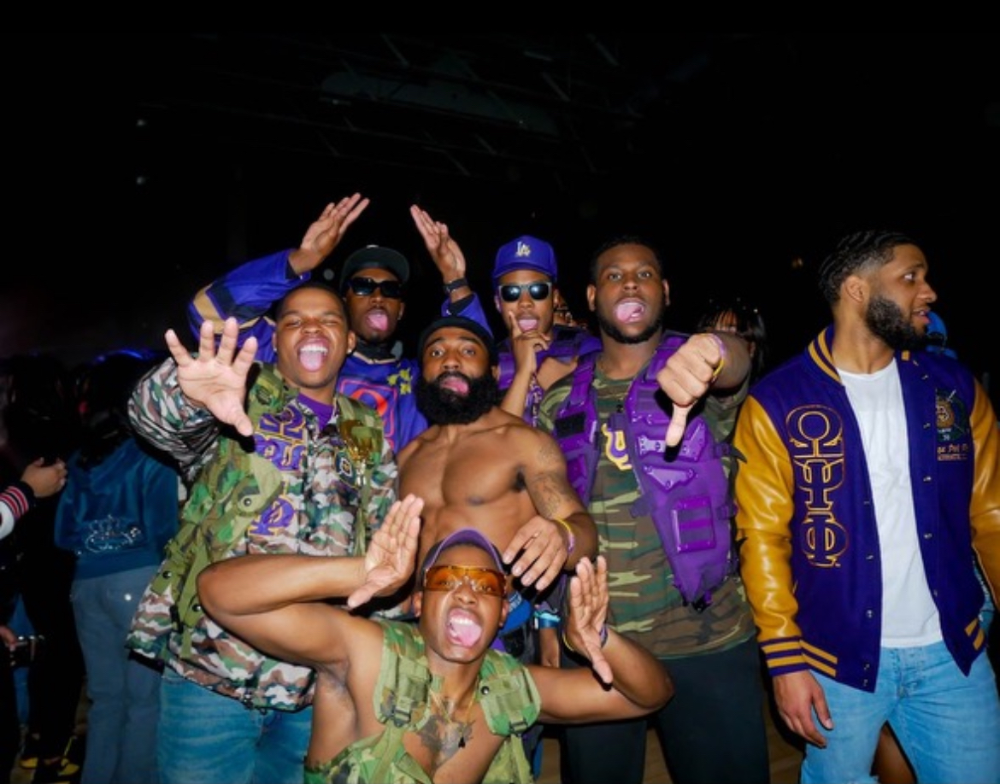

SOFTWARE PROFICIENCIES/TOOLS
Adobe Illustrator • Adobe Photoshop • Java • Java C++ • Python • HTML • Pharmacy Technician License • Unity • Unreal Engines • Visual Studio Code • Level Design • User Interface (UI) Design • Adobe Audition
Skills
Level Design • User Interface (UI) Design • Rule Book Design • Sound Design • Creating Board Games • Storytelling • Programming
About Me
My name is Mavric Johnson. I am from the south side of Chicago, Illinois, and attended King College Prep High School. I am also a proud member of Omega Psi Phi Fraternity, Inc., where I am known as the Here's a picture of me with some of my fraternity brothers:
As someone who has faced and overcome challenges, including mental health struggles, I hope my art can offer a sense of healing and inspiration to others.
Relax and Enjoy
Below is one of the most soothing songs to listen to while browsing my page: